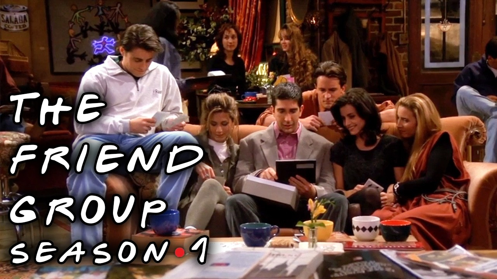
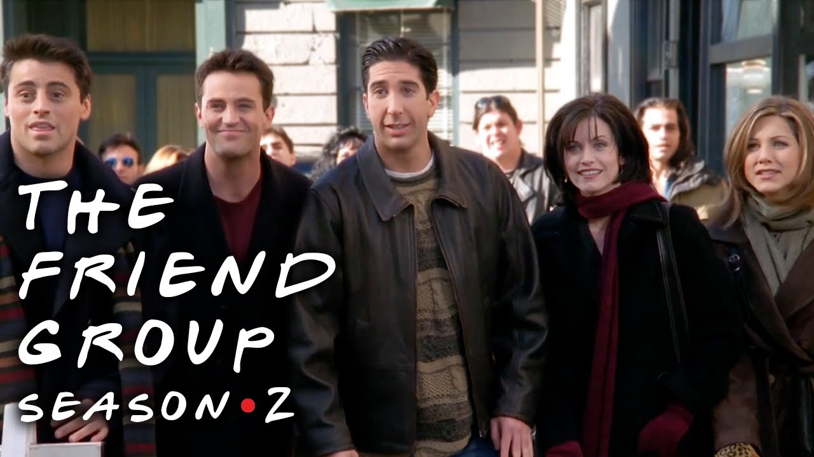
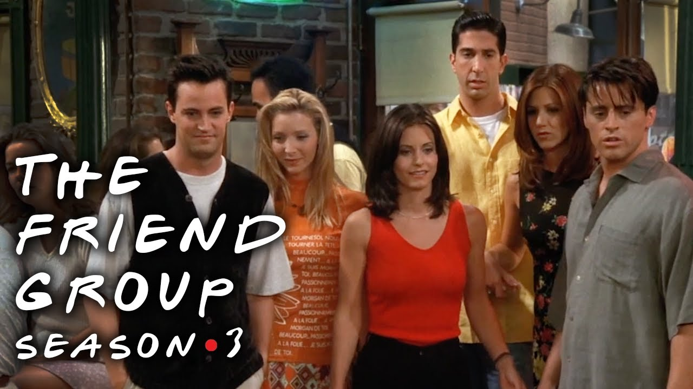
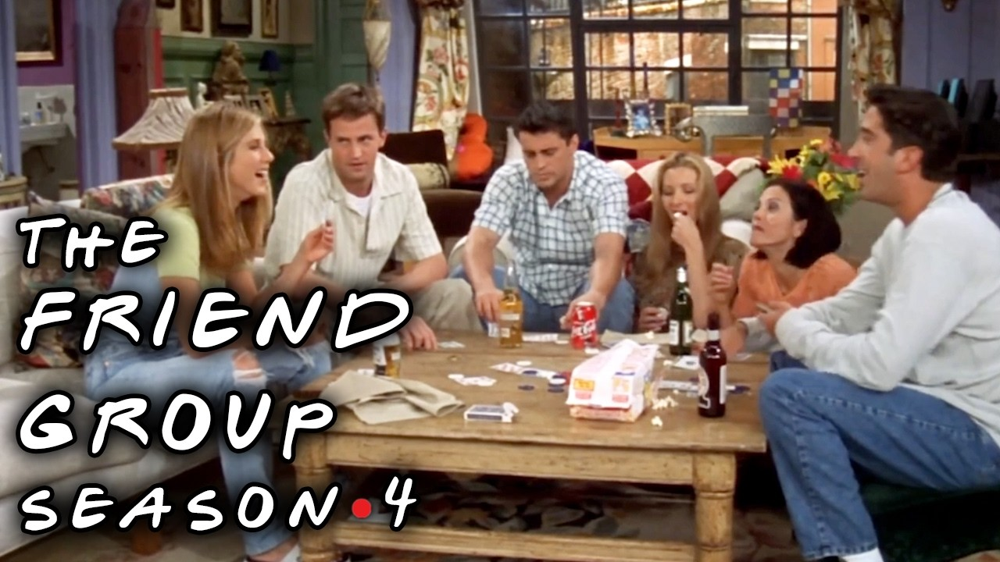
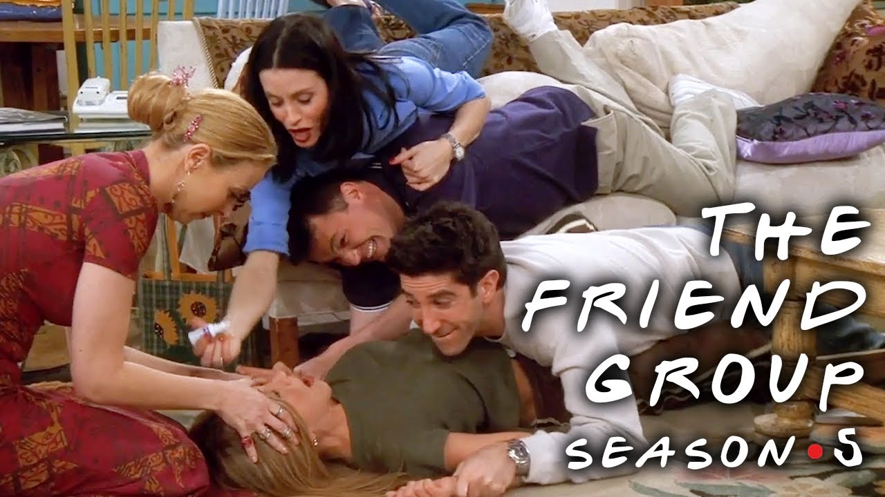
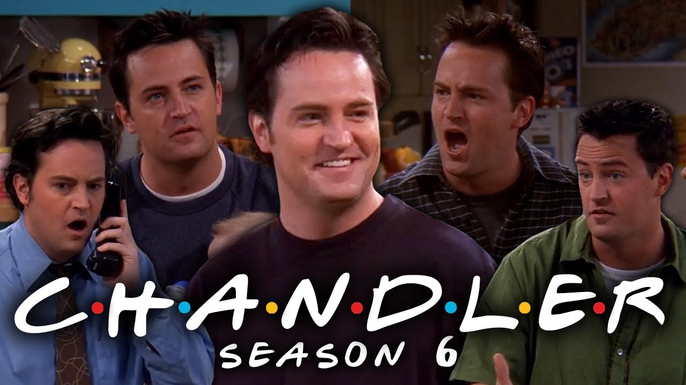
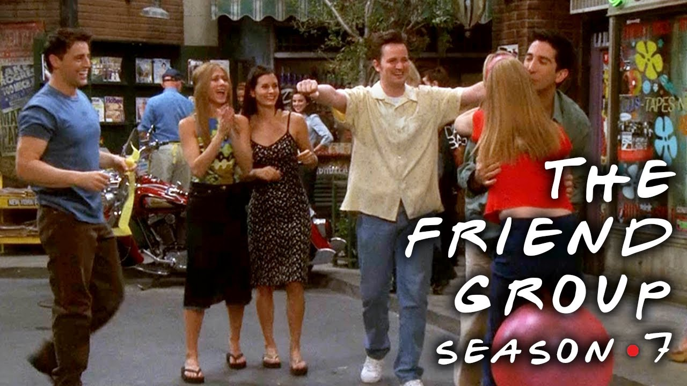
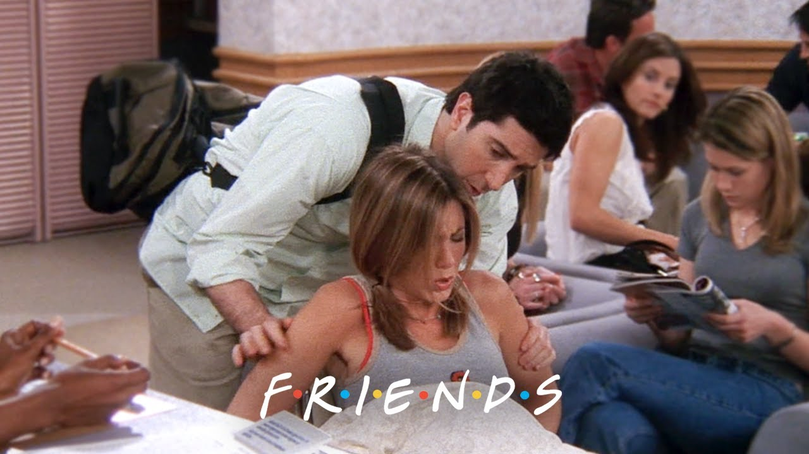
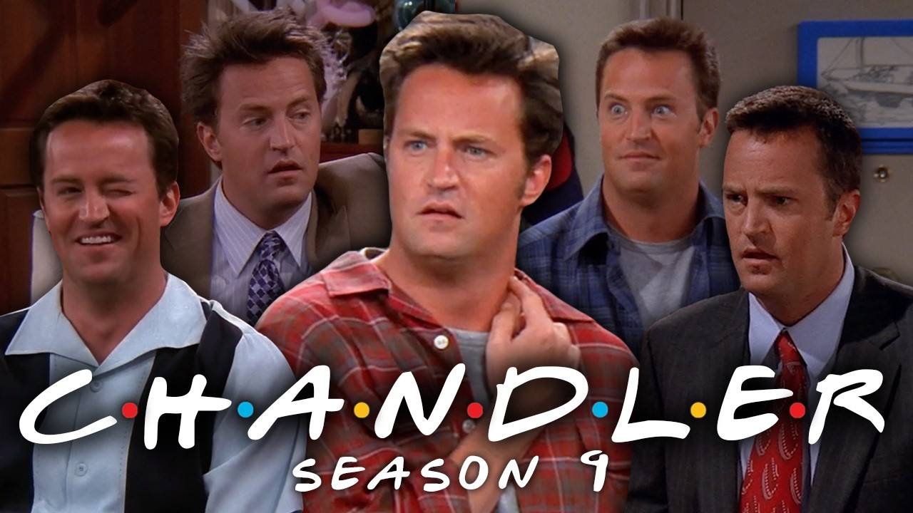
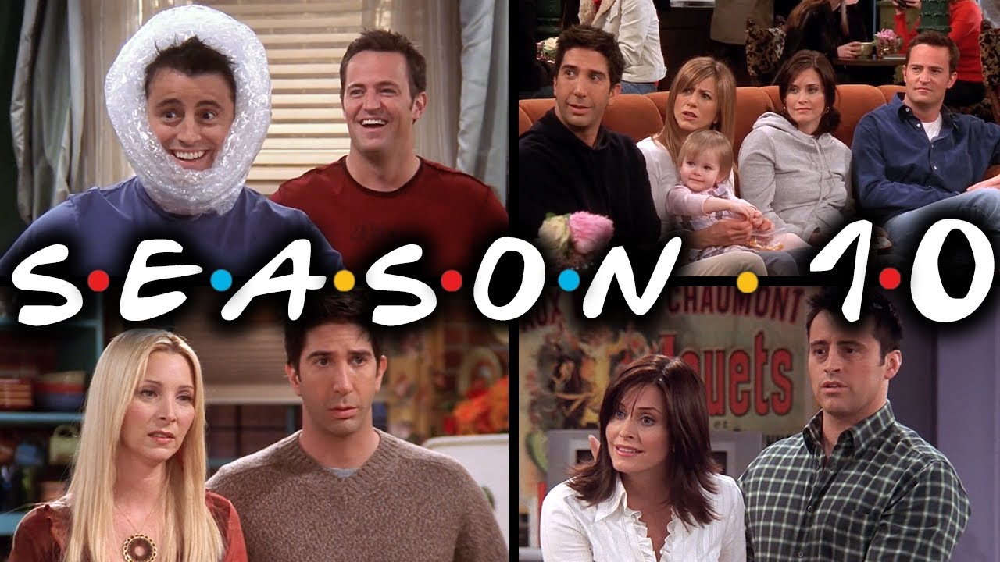

Temporadas
Explorá las diez temporadas.
Temporada 2
Entre cafés y primeros besos
Ross y Rachel se acercan. Joey vive su gran oportunidad.
Ver en YouTube

Temporada 4
Un viaje que lo cambia todo
Un viaje a Londres termina con una boda inolvidable.
Ver en YouTube
Temporada 5
El secreto peor guardado
Monica y Chandler guardan un secreto. Vegas los espera.
Ver en YouTube



Temporada 9
Nuevos planes, nuevos desafíos
Emma crece; los amigos afrontan nuevas decisiones.
Ver en YouTube
